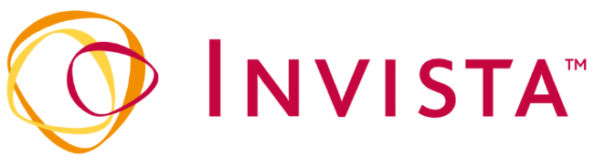
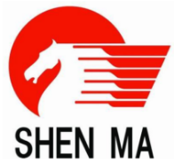
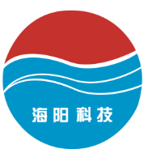
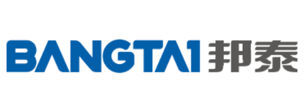
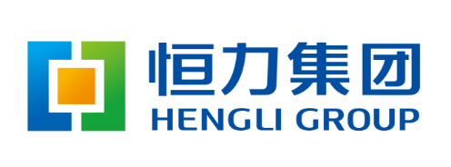

Partners
세계적인 다양한 기업들과 유통사업을 활발히 진행하고 있습니다.
OVERVIEW
-
미국에 본사를 둔 인비스타는 세계 최초로 나일론을 발명한 DUPONT사에서 분리된 세계 최대의 PA66 폴리머, 섬유 및 중간재 생산 기업입니다.
전 세계에 50여개의 거점을 두고 있으며, PA66 기초소재부터 PA66 resin에 이르기까지 수직적 통합 생산시스템을 구축, 다양한 PA66 제품을 글로벌 시장에 공급하고 있습니다. ㈜미가는 국내 유일한 총판으로 안정적인 서비스를 제공 해 드릴 수 있습니다. -
중국 내 최대의 석탄 생산 기업으로, ASIA에서 가장 큰 PA66 salt & 폴리머 생산기반을 구축하고 있으며 섬유, 타이어코드 및 다양한 폴리머 제품군을 전세계에 공급 중 입니다.
현재는 PA66 외 Caprolactam, PA6 및 Silicon carbide fine powder 제품도 생산하고 있습니다. ㈜미가는 정식으로 한국 내 판권을 소유한 기업으로 SHENMA의 다양한 소재들을 국내에 공급하고 있습니다. -
1970년 설립된 중국 내 PA6 전문 생산기업으로 Nylon6 Chip 및 타이어코드 및 다양한 종류의 합성섬유를 생산하고 있습니다.
연 35만톤의 PA6 생산능력을 보유하고 있으며, ㈜미가는 한국 공식 대리점으로 다양한 고객에게 더 나은 서비스를 제공해 드리고 있습니다. -
중국 허베이에 위치한 방타이 그룹은 1992년에 설립되어, 폴리우레탄 전문 생산 기업으로 TPU resin, hot melt TPU, water based PUD, melt-spun spandax 등의 제품을 주력으로 하고 있으며, 기타 새로운 기능성 친환경 재료를 생산하고 있습니다.
㈜미가는 국내 유일의 총판 업체로 다양한 고객의 needs를 대응하고 있습니다. -
헝리 그룹은 1994년 설립된 종합석유화학기업으로 정유, 석유화학 산업을 기반으로 PTA, EG 중간화학 물질 및 Polyester materials and textile 제품군을 메인으로 하며, PET, PBT, BOPET film, PP 등 다양한 제품을 생산하고 있습니다.
 -
LUXI Chemical group은 1992년 설립된 종합화학회사로 Formic Acid, Benzyl Alcohol, Cyclohexanone, Caprolactam 을 생산하고 있으며, 이러한 기초 화학물질을 기반으로 PA6, PC, PTFE, FEP 등 다양한 폴리머 제품을 생산합니다.